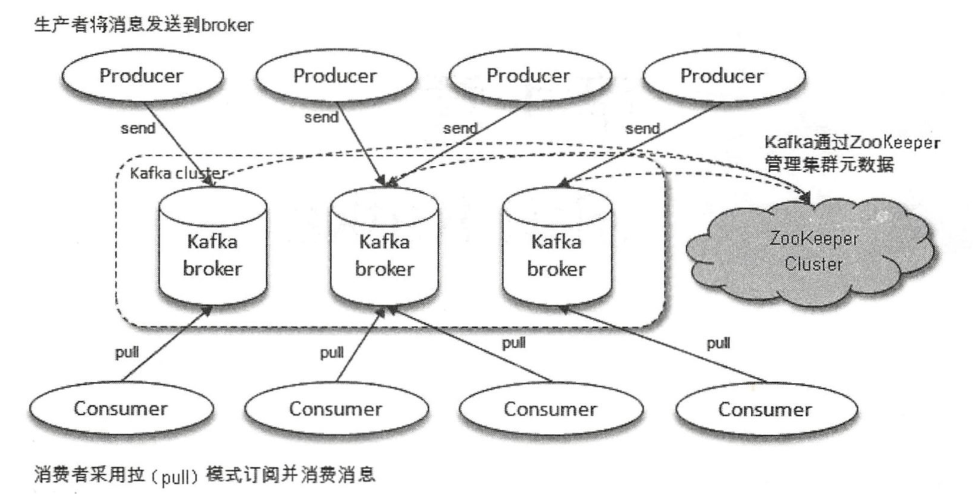
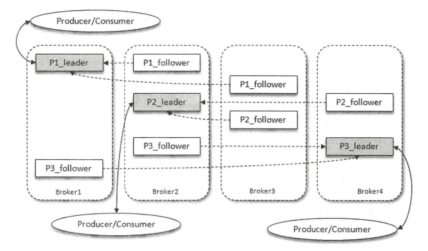
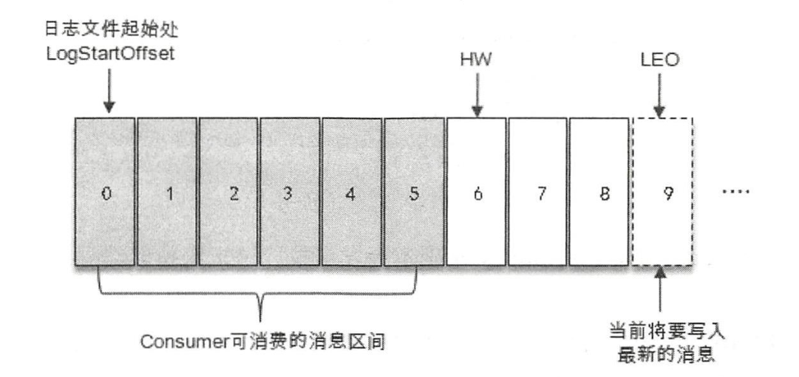
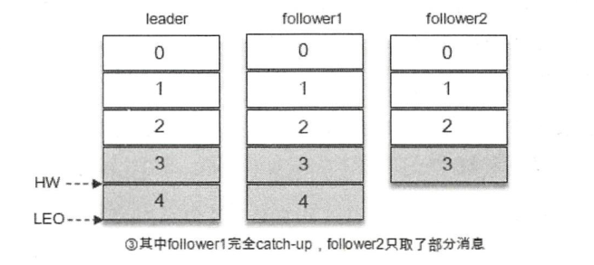
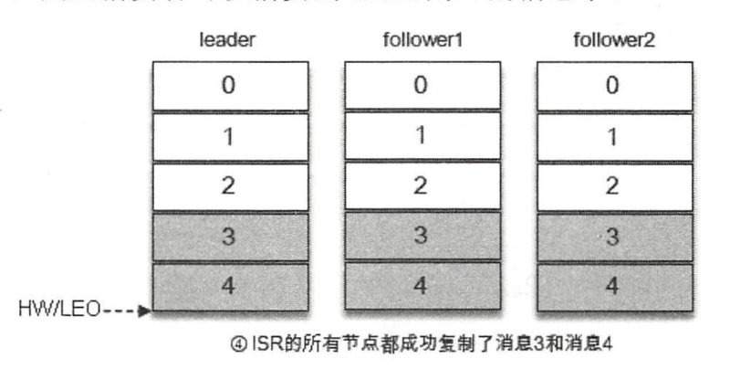

kafka学习笔记(1)
1、Kafka体系结构

2、Kafka的基本概念
1、Producer：生产者
生产者发送消息，负责创建消息，然后将其投递到Kafka中
2、Consumer：消费者
消费者接收消息，连接Kafka，进行相应的业务逻辑处理
3、Broker：服务代理节点
一个或者多个Broker组成一个Kafka集群
4、Topic：主题
Kafka中的消息以主题进行归类，生产者负责将消息发送到特定主题，消费者负责订阅主题并进行消费。
主题是一个逻辑概念，它可以细分为多个分区
5、Partition：分区
一个分区只属于单个主题，同一主题下的不同分区包含的消息是不同的，分区在存储层面可以看作一个可追加的日志文件，消息在被追加到分区日志文件的时候都会分配一个特定的偏移量(offset)。offset是消息在分区中的唯一标识，Kafka通过它来保证消息在分区内的顺序性，不过offset并不跨分区，Kafka保证的是分区有序而不是主题有序。
6、Replica：多副本
1、作用
容灾，通过增加多副本提升容灾能力
2、职责
副本之间的关系为“一主多从”，leader副本负责读写请求，follower副本只负责与leader副本之间的消息同步
3、架构

AR (Assigned Replicas)
分区中的所有副本统称为AR
ISR (In-Sync Replicas)
所有与leader副本保持一定程度同步的副本(包含leader)组成ISR
OSR (Out-of-Sync Replicas)
与leader副本同步滞后过多的副本(不包括leader)组成OSR
广义情况下
AR = ISR + OSR这里是集合之间的运算，而不是简单的加法算术运算
正常情况下
所有follower副本都应该与leader副本保持一定程度的同步，也即是AR = ISR，OSR为空集
为什么这里是一定程度上的同步，因为在分布式系统中我们不可能做到完全同步，只能保证最终一致性，允许一定程度上的滞后。
从业务层面上讲：leader副本负责处理读写请求，在系统层面上讲leader副本还要负责维护和追踪ISR集合中的所有follower副本的滞后状态，也就是说leader副本还要负责维护ISR和OSR，当follower副本落后太多或者失效时，leader副本会把它从ISR集合中剔除。如果OSR集合中有follower副本”追上”了leader副本，那么leader副本会把它从OSR集合转移至ISR集合。
默认情况下、当leader发生故障时，只有在ISR集合中分副本才有资格被选举为新的leader，而在OSR中的副本没有任何机会(这个规则可以通过修改相应的参数配置来改变)。
HW (High Watermark)
俗称：高水位，它标识一个特定的消息偏移量(offset)
消费者只能拉取到这个offset之前的消息
LEO (Log End Offset)
日志结束偏移量，它标识当前日志文件中下一条待写入消息的offset

上图中offset为9的位置即为当前日志文件的LEO，LEO的大小相当于当前日志分区最后一条消息的offset的值+1。分区ISR集合中的每个副本都会维护自身的LEO，而ISR集合中最小的LEO即为分区的HW，对消费者而言只能消费HW之前的消息。
ISR、HW和LEO之间的关系
我们分如下几种情况来说明

首先消息3、4从生产者发出，存入leader中，然后follower副本要同步消息，从leader副本中拉取

在同步过程中，不同的follower的同步效率也不尽相同，于是可能出现下面的情况，
- follower1完全跟上了leader副本，而follower2只同步了消息3，如此leader副本的LEO为5，follower1的LEO为5，follower2的LEO为4，那么当前分区的HW取最小值4，此时消费者可以消费到offset为0至3之间的消息。

也可能会出现所有follower副本都同步成功写入了消息3、4，那么整个分区的HW和LEO都变成为5，因此消费者可以消费到offset为4的消息。

Kafka多副本同步总结
Kafka的复制机制既不是完全的同步复制，也不是单纯的异步复制。事实上，
同步复制要求所有能工作的follower副本都复制完，这条消息才会被确认为已经成功提交。
异步复制是follower副本异步地从leader副本中复制数据，数据只要被leader副本写入就被认为已经成功提交。在这种情况下，如果follower副本都没有复制完而落后于leader副本，突然leader副本宕机，则会造成数据丢失。
Kafka使用的这种ISR的方式则有效地权衡了数据可靠性和性能之间的关系。